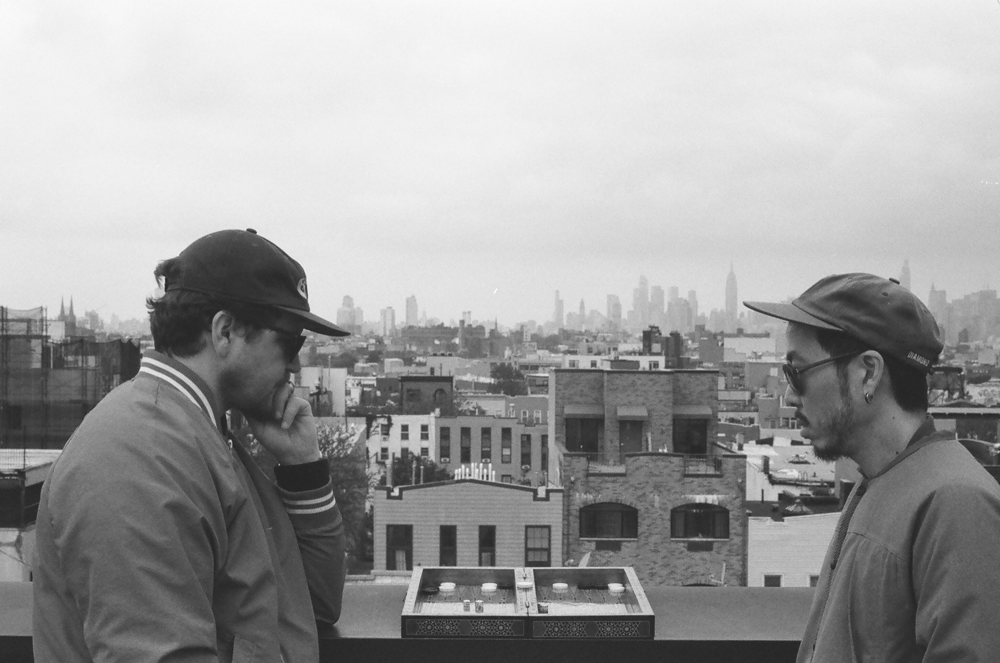

live footage
Live footage is the long-running collaboration and friendship between Topu Lyo (cello, electronics) and Mike Thies (drums, keyboards). Since first performing together in Tribeca, New York in 2006, the duo has developed a musical language shaped by improvisation, travel, and nearly two decades of shared history.
As composers and producers, they have contributed to award-winning films, documentaries, theatrical productions, and commercial campaigns, including the Emmy-nominated Jeen-Yuhs (Netflix), Soul Patrol (winner of Best Documentary Director at Sundance 2026), The Boy from St. Croix, Beam Me Up Sulu, After Baywatch, and The People's Champ.
At its core, Live Footage is an ongoing conversation between two friends—one that continues to unfold through composition, improvisation, and a shared curiosity about storytelling.
photo by nolan thies and yvonne ambree
